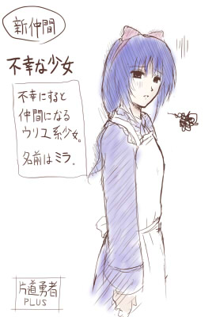

■2014-08-30 (土) 片道+ 48 終わりへ▼
片道勇者プラスは開発の終わりに向けて地味に進行中です。
残りは調整や遊びやすさ向上、バグ修正が主で、
それが終われば内々のテストに入ります。
色々脇の作業が入ることを考えると、まだ2ヶ月くらいかかるでしょうか。
そして、そのテストでまた一ヶ月分くらいの作業がドバーっと
発生するところまでは織り込み済みです。
「テストしたらリリースだー」なんて甘い考えで何度後悔したことか！
テスト期間は十分に取りましょう。
さて、今回は新しい仲間のご紹介！
片道勇者+では2人の新キャラクターが仲間になります。
今回は、そのうちの片方をご紹介します。
不幸な少女ミラ

ミラは、シルフェイド幻想譚のウリユのように、
不幸な展開を迎えると仲間になる少女キャラです。
可憐な少女が仲間になる状況なんて、死んじゃうか
行き場がなくなる以外のケースが想像できないのでもう定番です。
これで死臭と獣臭しかしないヒロイン群に普通の人間が追加されます！
やったね！
以下は気になった拍手コメント返信です、いつもありがとうございます！
＞制作の方、ご苦労様です。お答えしづらい質問かもしれませんが、 .
＞作者様にお金が入りやすい方はやはり公式サイトからの購入でしょうか？ .
＞作者様を応援したく思っているのでより支援できる方を買いたいと思っています。
ありがとうございます！
資金援助目的でしたら、公式サイトからの購入が一番お金が入ると思います。
だいたい、企業が一つ間にはさまるごとに私に届くお金が
3割（アプリのショップはこれが多いですよね）～■割目減りしていく感じです。
＞今さらではありますけれど、片道勇者も含めたウディタ製ゲーム。 .
＞Game.exeってウディタ自体の更新時に差し替えとくべきなのでしょうか？
Game.exeはバグが起きてないなら古いままでも問題ないと思います。
＞片道勇者でボタンが押しっぱなしになる不具合があるようです。
ギャアア！ 直したと思ったら最新版のEXEがそのままでした！
また整理し直してアップします！ ご迷惑をお掛けしました。
なお、ボタンが押しっぱなしになってしまうのはゲーム中に
「Altキーを押してもゲームが止まらない」バージョンです。
Altを押して止まるならおそらく安全です。
＞ウルフエディタ製のゲームで同じキーを二回以上押したら .
＞二回以降反応しなくなるようになってしまいました .
＞最初はそれを確認したゲームだけかと思いましたが .
＞ウルフエディタ製でキーボードを使うものを他にも試したところ
＞どれも同じ現象が起きたのでご相談願います .
私も聞いたことがない症状なので、もし直せたという方がおられましたら
他の方でも情報をいただけますと幸いです。もしかしたら、Windoswの
サポート機能にボタン押しっぱなし的な機能があったかもしれませんので、
そちらを見ていただくのも何か見つかるかもしれません。
↓
◆サポート掲示板にてスターロード様よりアドバイスをいただきました！
以下をチェックしてみてください。
キーボードで同じキー２回連続で入力すると２回目以降が
入力されない件については、Windows側の原因であるならば
フィルタ キー 機能 がオンになっているのが原因と思われます。
コントロールパネルのユーザー補助のオプションが初期設定だと
Shiftキーを８回連続で入力するとオンになります。
同じ操作（シフト８回連続）をするかコントロールパネルのユーザー補助の
オプションでフィルタ キー機能をオフにすれば治ると思います。
2014-08-30 (土)  カテゴリ: 片道勇者
カテゴリ: 片道勇者
 カテゴリ: 片道勇者
カテゴリ: 片道勇者